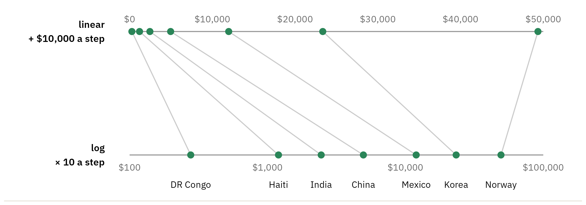
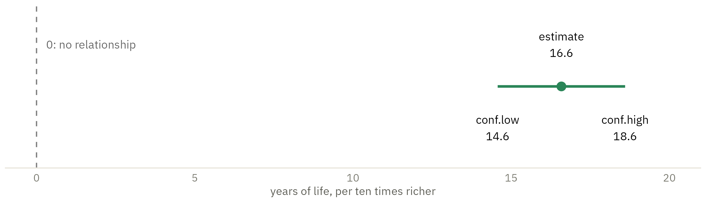

gap <- read_tsv("data/gapminder.csv") # tab-separated: read_tsv(), not read_csv()Rosling’s chart, built
Week 4 · Work group
03 EVIDENCE
Thursday 13:30 · 105 min
Last week Gapminder answered a question about one variable: how life expectancy is spread. This week it gets a second one. Tuesday’s lecture named four settings for a scatterplot: how points pile up, which line is drawn, what an equal step means, and the third variable. It also turned a model into a chart of its coefficients. Today you do both on the most famous scatterplot of the last twenty years, Hans Rosling’s income against life expectancy.
As last week, the session has two parts. Part I you work through with the teacher, with three exercises along the way; nothing from it is handed in. Part II is a relationship of your own and its misleading twin: portfolio entry 3, and the only thing you hand in.
Schedule
| min | |||
|---|---|---|---|
| 13:30 | Meet the data | 5 | Last week’s Gapminder, now with two continuous columns on one chart |
| 13:35 | Part I · together | 50 | Income against life expectancy: a chart that lies, one year, a log axis, the line and its numbers, Rosling’s chart, and the model drawn as coefficients. Exercises 1 to 3 |
| 14:25 | Part II · Draw it | 10 | Pairs, paper, felt pen. Your chart, for the claim it should support |
| 14:35 | Part II · Build it | 40 | Start on your own, from your sketch. The rest of the build and the twin are for home |
0 · Setup
Unzip it into your dsvar folder and double-click dsvar-week-04.Rproj. In the folder:
week-04-part1.qmd |
Part I, with the teacher. The example’s code, ready to run, and an empty chunk for each exercise. Not handed in |
week-04-part2.qmd |
Part II, on your own. Empty chunks for your chart and its twin. This is what you hand in |
theme-dsvar.R |
The course theme |
data/ |
Today’s dataset, last week’s Gapminder |
Today needs two packages you may not have yet. If library(ggrepel) or library(broom) says there is no such package, run install.packages(c("ggrepel", "broom")) in the console once.
Part I · Together
Open week-04-part1.qmd. The teacher runs each chunk on the screen, and you run it on yours. Each exercise has its own empty chunk in that file, under the same step as on this page: write your code there and run it. No AI in Part I, code completion included: this is where you learn the code you will later judge a tool’s output against.
1 · Meet the data
You met the columns last week. Two of them share a chart today:
| Column | What it is |
|---|---|
gdpPercap |
GDP per person: everything a country produced in a year, divided by its population, in US dollars adjusted for inflation. An average: it says nothing about who gets the income |
lifeExp |
Life expectancy at birth, in years: how long a baby born that year would live if that year’s death rates held for its whole life |
Source, for every caption: Gapminder, via Jennifer Bryan’s gapminder package (CC BY 4.0).
2 · A chart that runs and lies
The question for Part I: do people in richer countries live longer? This first try runs without an error and looks finished. It lies twice. Find both.
ggplot(gap, aes(gdpPercap, lifeExp)) +
geom_point()3 · One year, one point per country
Keep one year, and make the points smaller and fainter so that where they pile up shows: Tuesday’s first setting, how points pile up.
g07 <- gap |>
filter(year == 2007)
ggplot(g07, aes(gdpPercap, lifeExp)) +
geom_point(alpha = 0.5, size = 1.5)Better, but most countries still sit against the left edge, and the cloud bends: it climbs steeply, then flattens out. Before drawing any line, the axis needs fixing.
4 · What an equal step means: a log axis
On a linear axis every step adds the same number of dollars. On a log axis every step multiplies by the same number: $100, $1,000, $10,000 and $100,000 are evenly spaced. The picture shows seven countries from 2007 on both:

On the linear line, DR Congo, Haiti, India and China are a few millimetres apart, though China is eighteen times richer than DR Congo. On the log line, being ten times richer is the same distance wherever you start: from $500 to $5,000, or from $5,000 to $50,000. Neither axis is dishonest; they answer different questions. For income, how many times richer is usually the question that matters.
ggplot(g07, aes(gdpPercap, lifeExp)) +
geom_point(alpha = 0.5, size = 1.5) +
scale_x_log10(labels = scales::label_dollar(accuracy = 1))The countries spread out, and the bend is gone: the cloud runs up in what looks like a straight band.
5 · Which line is drawn
First let the data draw its own curve. geom_smooth(method = "loess") follows the points without an equation, as on Tuesday.
ggplot(g07, aes(gdpPercap, lifeExp)) +
geom_point(alpha = 0.5, size = 1.5) +
geom_smooth(method = "loess", formula = y ~ x) +
scale_x_log10(labels = scales::label_dollar(accuracy = 1))Nearly straight, so a straight line has earned its place. Fit the model before drawing it. log10() turns $1,000 into 3 and $10,000 into 4, so one step of log10(gdpPercap) is ten times richer:
fit <- lm(lifeExp ~ log10(gdpPercap), data = g07)
coef(fit)- Slope, 16.6: a country ten times richer goes with 16.6 more years of life. From $1,000 to $10,000, the line climbs from 54.7 to 71.3 years.
- Intercept, 4.9: the line’s value at $1 a year, where no country is. It only says where the line starts.
geom_smooth(method = "lm") draws the same model. On a log axis it fits the line to log10(gdpPercap), so this is exactly the line of fit:
ggplot(g07, aes(gdpPercap, lifeExp)) +
geom_point(alpha = 0.5, size = 1.5) +
geom_smooth(method = "lm", formula = y ~ x) +
scale_x_log10(labels = scales::label_dollar(accuracy = 1))EXERCISE 1
Draw step 3’s chart, on the linear axis, twice: once with the loess curve and once with a straight lm line. Where does the straight line miss the countries? Use predict(lm(lifeExp ~ gdpPercap, data = g07), tibble(gdpPercap = 49357)) to see how long it says people in Norway live, and compare that with Norway’s row in g07.
# your code here6 · The third variable: Rosling’s chart
Rosling added two more variables: colour for the continent, and the area of each circle for the population. scale_size_area() makes the area, not the radius, follow the population, so China is a circle with more than 4,000 times the area of Iceland, not one that just looks big. A few countries get their names from a second, small table, drawn by geom_text_repel() from the ggrepel package so the names stay clear of each other. Compare it with the gallery’s version.
library(ggrepel)
named <- g07 |>
filter(country %in% c("China", "India", "United States", "Nigeria",
"Japan", "South Africa", "Brazil"))
ggplot(g07, aes(gdpPercap, lifeExp)) +
geom_point(aes(size = pop, colour = continent), alpha = 0.6) +
geom_text_repel(data = named, aes(label = country), size = 3.2) +
scale_x_log10(labels = scales::label_dollar(accuracy = 1)) +
scale_size_area(max_size = 14, guide = "none") +
scale_colour_dsvar_d() +
labs(title = "In 2007, people in richer countries lived longer",
subtitle = "Life expectancy at birth against GDP per person, log scale. Circle area: population",
caption = "n = 142 countries, 2007 · Gapminder",
x = NULL, y = "years", colour = NULL)The continents sit in bands: most African countries low and to the left, most European ones high and to the right. That raises a question for the model in step 7: how much of income’s 16.6 years is really the continent?
EXERCISE 2
Make Rosling’s chart for 1952 and 2007 side by side, as two panels on one shared scale (filter() two years, then facet_wrap(~ year)). Did the cloud move to the right, up, or both? Read both panels at $1,000: about how long did people live there in 1952, and in 2007?
# your code here7 · From a model to a coefficient plot
A line has two numbers. A model with more predictors has more, and Tuesday drew them as a coefficient plot: one point for each estimate, a line for its 95% interval. Three steps get you there.
Step 1: the model as a table. broom::tidy() turns a fitted model into a tibble, one row per coefficient; conf.int = TRUE adds the two ends of the interval.
broom::tidy(fit, conf.int = TRUE)Step 2: one row becomes one mark. Each row has everything a geom_pointrange() needs:

Step 3: a model worth drawing. Step 6 raised the question of the continent. Put it in the model next to income. Each continent then gets its own coefficient: how many years longer people lived there than in Africa (the continent R lists first) at the same income. Drop the intercept, which is no effect of anything, give the rows readable names, and draw them:
m_cont <- lm(lifeExp ~ log10(gdpPercap) + continent, data = g07)
coefs <- broom::tidy(m_cont, conf.int = TRUE) |>
filter(term != "(Intercept)") |>
mutate(term = str_remove(term, "continent"),
term = if_else(term == "log10(gdpPercap)", "ten times richer",
paste(term, "rather than Africa")))
coefsggplot(coefs, aes(estimate, fct_reorder(term, estimate))) +
geom_vline(xintercept = 0, linetype = "dashed", colour = "grey50") +
geom_pointrange(aes(xmin = conf.low, xmax = conf.high)) +
labs(title = "At the same income, people outside Africa lived about ten years longer",
subtitle = "Coefficients of one model of life expectancy, 2007, with 95% intervals",
caption = "n = 142 countries · lm(lifeExp ~ log10(gdpPercap) + continent) · Gapminder",
x = "years of life", y = NULL)Every row is in years of life, so they can share one axis. Income’s coefficient fell from 16.6 to 10.7: some of what looked like income was the continent. Oceania’s interval is the widest by far, from 4.0 to 21.9, because Oceania is two countries. The interval says so; a table of estimates alone would not.
EXERCISE 3
Has income always bought as many years of life? Fit step 5’s model, lifeExp ~ log10(gdpPercap), separately for each of the twelve years, and draw the twelve income coefficients as a coefficient plot: year along the bottom, the estimate and its interval up the side. reframe() is summarise() for results with more than one row, so group_by(year) |> reframe(broom::tidy(lm(lifeExp ~ log10(gdpPercap)), conf.int = TRUE)) fits one model per year. Then keep only the rows you need. What happened to the coefficient between 1952 and 2007, and how does that fit with what you saw in exercise 2?
# your code hereEverything you need for Part II is now on your screen.
Part II · On your own: portfolio entry 3
What you hand in · portfolio entry 3 · due Sunday
Your sketch, your chart and its misleading twin, in week-04-part2.qmd. The file has the data loaded and empty chunks for the rest. Part I is your model; the reference sheet has the syntax on other data.
The claim your chart should support
The lower a country’s life expectancy in 1952, the more years it gained by 2007.
And the twin you will build from the same dataset:
In Africa, countries with a low life expectancy in 1952 did not gain more years.
Each point is a country. Along the bottom: life expectancy in 1952. Up the side: how many years it went up by 2007 (2007 minus 1952). Only your choices differ between the two charts, and naming the one that did the work is part of the entry.
8 · Draw it
ON PAPER · IN PAIRS · 10 MIN
The lower a country’s life expectancy in 1952, the more years it gained by 2007.
Draw the chart that supports the first claim, with a felt pen. No laptop.
- What is one point, and which two years do its two numbers come from?
- What goes along the bottom, and what goes up the side?
- Where on your chart is a country that gained nothing at all?
- Which few countries would you name, and why those?
The teacher reads the sketches before anyone opens RStudio. Keep yours and photograph it: the sketch is part of what you hand in.
9 · Build it
Build your sketch in the chunk The chart of week-04-part2.qmd: start in the room, finish at home. The dataset has one row per country and year, and your chart needs one row per country with two years side by side, so the first job is pivot_wider(), from week 1. The finished chart carries the claim as its title, the model’s slope in its subtitle or caption, and the n, the source and what the band is in its caption.
AI is allowed from here on: describe how you used it in the entry’s AI statement.
STUCK?
The reference sheet has pivot_wider() on other data. After that, find the step in Part I that did the same job: the points (step 3), the line and the numbers behind it (step 5), a few names from a second table (step 6), the claim and the caption (step 6).
10 · Twist it
Same dataset, same two years. In the chunk The misleading twin, build a chart that supports the second claim:
In Africa, countries with a low life expectancy in 1952 did not gain more years.
The rule: only choices you could defend in a paper. Nothing invented, nothing a reviewer would send back. This one is for home.
Hand it in
Next Tuesday’s lecture opens with a critique of some of the handed-in entries, shown as screenshots and without names.
What you hand in · portfolio entry 3 · due Sunday
week-04-part2.qmd, with these six things in it:
- Your sketch, photographed and saved in the week folder as
sketch.jpg. The file shows it automatically. If your phone saves.heic, export the photo as JPG first: browsers cannot show HEIC. - The chart for the first claim, with the claim as its title, the slope on the chart, and what the band is in its caption.
- The misleading twin for the second claim, made only with choices you could defend.
- One sentence: which choice did the work, named as Tuesday named it: how points pile up, which line is drawn, what an equal step means, the third variable, or who is in it.
- What the charts cannot tell you, in a sentence or two.
- Your AI statement, as the AI use page describes it.
Render the file, then upload week-04-part2.html to Canvas. Only that file: nothing from Part I, and not the whole folder. The HTML holds your code and your charts together, which is what the portfolio is built from.
Reference sheet
On mpg, midwest, mtcars and us_rent_income, built into R and the tidyverse, so they cannot be pasted into today’s build without being understood first. The forms are in the field guide: scatterplot, with a fitted line, transparent scatter, bubble chart, small multiples.
Two columns from one:
pivot_wider()
us_rent_income has two rows per state, one for income and one for rent. A scatterplot of rent against income needs them side by side, in one row:
rent <- us_rent_income |>
select(NAME, variable, estimate) |>
pivot_wider(names_from = variable, values_from = estimate) |> # one row per state
mutate(share = 12 * rent / income) # a new column from the two
rentnames_from says which column’s values become the new column names; values_from says which column fills them. names_prefix = "y_" puts text in front of each new name, which you need when the names would be numbers.
Two continuous variables, and a line
ggplot(mpg, aes(displ, hwy)) +
geom_point(alpha = 0.4) +
geom_smooth(method = "loess", formula = y ~ x) # a curve, no equationfit_mpg <- lm(hwy ~ displ, data = mpg)
coef(fit_mpg) # intercept and slope: what geom_smooth(method = "lm") draws
predict(fit_mpg, tibble(displ = 3)) # the line's value at one point
resid(fit_mpg)[1:5] # how far each car is from the line
A log axis, and names
library(ggrepel)
ohio <- midwest |> filter(state == "OH")
largest <- ohio |> slice_max(poptotal, n = 3)
ggplot(ohio, aes(poptotal, percollege)) +
geom_point(alpha = 0.5) +
geom_text_repel(data = largest, aes(label = county), size = 3.2) + # this layer draws only these rows
scale_x_log10(labels = scales::label_number(scale_cut = scales::cut_short_scale()))scale_x_log10() puts 1,000, 10,000 and 100,000 at equal distances. In a model, log10(x) does the same: one step of it is ten times as much.
Size and colour as third variables
ggplot(midwest, aes(percollege, percbelowpoverty)) +
geom_point(aes(size = poptotal, colour = state), alpha = 0.4) +
scale_size_area() + # value maps to AREA; scale_size() maps it to the radius
scale_colour_dsvar_d() # the course's colours for categories
A model’s coefficients, drawn
lm(mpg ~ wt + am, data = mtcars) |>
broom::tidy(conf.int = TRUE) |> # one row per coefficient, with its interval
filter(term != "(Intercept)") |>
mutate(term = recode(term, wt = "1,000 lb heavier", am = "manual gearbox")) |>
ggplot(aes(estimate, term)) +
geom_vline(xintercept = 0, linetype = "dashed", colour = "grey50") + # no relationship
geom_pointrange(aes(xmin = conf.low, xmax = conf.high)) +
labs(x = "miles per gallon", y = NULL)Coefficients share one axis only when they share a unit; here both are miles per gallon.
One model per group
mpg |>
group_by(year) |>
reframe(broom::tidy(lm(hwy ~ displ), conf.int = TRUE)) |> # one model, one table, per year
filter(term == "displ") |>
ggplot(aes(factor(year), estimate)) +
geom_pointrange(aes(ymin = conf.low, ymax = conf.high)) +
labs(x = NULL, y = "miles per gallon, per litre")
Scales against theme
scale_x_log10(labels = scales::label_dollar(accuracy = 1)) # scale: changes positions and what labels say
scale_y_continuous(limits = c(40, 85)) # scale: DROPS data outside, and the fit changes
coord_cartesian(ylim = c(40, 85)) # coord: zooms, keeps every point in the fit
theme(panel.grid.major.x = element_line()) # theme: ink only